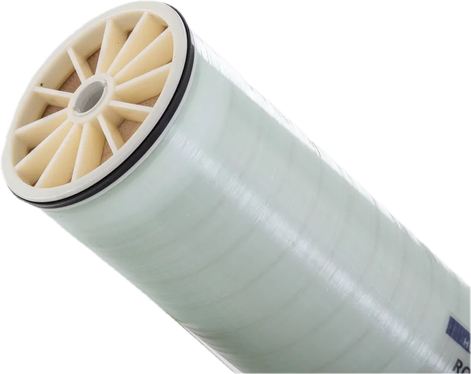

Product portfolio
Membranes for every stage of the water chain.
Nine product lines: five reverse osmosis, two nanofiltration, plus MBR and column UF modules. RO and NF elements come in standard 4040 and 8040 formats.

Extra low pressure

Extra Low Pressure RO Element
High permeate flow at ultra-low operating pressure, for feed water below 1,000 ppm.
Low pressure

Low Pressure RO Element
Energy-saving, high-permeate RO for feed water below 2,000 ppm, tolerant of repeated acid and alkali cleaning.
Brackish water

Brackish Water RO Element
High-rejection, industrial-grade RO for feed water below 5,000 ppm, with a broad pH tolerance and easy cleaning.
Anti-fouling

Anti-Fouling RO Element
Contamination-resistant RO for high-fouling brackish water below 5,000 ppm, field-proven over 693 days in mine-water reuse.
Seawater

Seawater Desalination RO Element
High-rejection, high-flux RO for feed water above 10,000 ppm. No oxidative post-treatment is used to boost initial performance.
Drinking water

High-Quality Drinking Water NF Element
High-flux nanofiltration for deep purification of municipal surface or well water, retaining beneficial minerals for taste.
Industrial salt separation
Industrial Salt Separation NF Element
High-selectivity nanofiltration that retains organics above 200 Da and divalent salts while passing part of the monovalent salts.
Membrane bioreactor

Membrane Bioreactor (MBR) Module
Stainless-steel-frame modules with more than 100 mm between membrane sheets, for municipal and industrial biological treatment.
Column ultrafiltration
Column Ultrafiltration (UF) Module
PVDF hollow-fiber UF columns with pores below 30 nm, for water purification and wastewater treatment.
Product selector
Start from your water.
Three steps, using the feed ranges, applications and models stated in the HUAXIN product manual. The result is a starting point; a design & cost review sizes the actual system.
Comparison
RO and NF elements side by side.
Ratings are measured under each product's own test conditions. Compare rejection figures only alongside the conditions that produced them.
| Product | Type | Feed salinity | Stable rejection | Rated at | Models |
|---|---|---|---|---|---|
| HX-XLP | RO | < 1,000 ppm | 99.0% | 500 ppm NaCl, 100 psi (0.69 MPa), 25 °C, 15% recovery, pH 7–8 | 4040-100 · 8040-400 · 8040-440 |
| HX-LP | RO | < 2,000 ppm | 99.3% | 1,500 ppm NaCl, 150 psi (1.03 MPa), 25 °C, 15% recovery, pH 7–8 | 4040-100 · 8040-400 · 8040-440 |
| HX-BW | RO | < 5,000 ppm | 99.5% | 2,000 ppm NaCl, 225 psi (15.5 bar), 25 °C, 15% recovery, pH 7–8 | 4040-100 · 8040-400 · 8040-440 |
| HX-BWFR | RO | < 5,000 ppm, high fouling | 99.5% | 2,000 ppm NaCl, 225 psi (15.5 bar), 25 °C, 15% recovery, pH 7–8 | 4040-100 · 8040-400 |
| HX-SW | RO | > 10,000 ppm | 99.7% | 32,000 ppm NaCl, 800 psi (5.5 MPa), 25 °C, 8% recovery, pH 7–8 | 4040-100 · 8040-400 · 8040-440 |
| HX-HQ | NF | Municipal surface or well water | > 90% | 2,000 ppm NaCl, 100 psi (6.9 bar), 25 °C, 15% recovery, pH 7–8 | 4040-100 · 8040-400 · 8040-440 |
| HX-BM | NF | Industrial process streams | 98% MgSO₄ | 2,000 ppm NaCl / MgSO₄, 100 psi (6.9 bar), 25 °C, 15% recovery, pH 7–8 | 4040-100 · 8040-400 · 8040-440 |
Rejection for HX-BM is MgSO₄ (NaCl 5–30%). Permeate flow per element may vary ±20% (HX-BM: not more than 15% below the stated value).
Model codes
Read any HUAXIN element code.
Example: HX-BW-8040-400
Talk to an engineer
Not sure which element fits?
Share your feed analysis, flow and recovery targets. HUAXIN's engineers will confirm the right line and model.